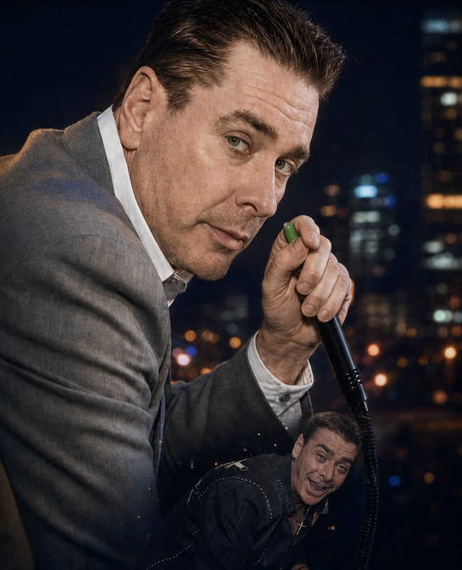

01
The Rooms
From the unforgettable Club Esso era onward, Kenny understood that a venue was more than walls. It was energy, identity, and possibility.

A Celebration of Life
The Godfather of Atlanta Nightlife
Visionary. Mentor. Entertainment innovator.
A life that changed the rhythm of a city.
01 / His Story
Kenny Flynn defined an unforgettable chapter of Atlanta nightlife.
As the owner of club Esso, co-owner of Vision, owner of In Like Flynn entertainment, and a fixture in the city’s entertainment world, he was remembered as an innovator, connector, and mentor who understood that the magic of a room began with its people.
His influence reached far beyond a guest list or a dance floor. Friends and peers remember the introductions, encouragement, loyalty, and moments of care that made him part of the city’s fabric.
Some people enter a room.
Kenny changed the room.
02 / Legacy
The venues became landmarks. The relationships became the real architecture.
From the unforgettable Club Esso era onward, Kenny understood that a venue was more than walls. It was energy, identity, and possibility.
He opened doors, made introductions, and helped people find their place in a business built on relationships and trust.
His influence remains in Atlanta’s after-dark culture and in every story that begins with the words, “You had to be there.”
His story is bigger than one page. Help build the archive.
Share what you remember03 / Memories
Memories can preserve what photographs cannot: the voice, the timing, the laughter, the tiny details that made Kenny unmistakably Kenny.
Approved memories can become part of a permanent public archive on KennyFlynn.com.
Contribute to the memorial
Submissions are reviewed before publication.
04 / Gallery
A curated collection of photographs shared by friends, family, and the rooms Kenny filled. Every image is reviewed before it appears here.
Have a photo to share? Email it to the memorial organizer with permission to publish, or include a link when you share a memory.
The archive is just beginning
Approved photographs will appear here. Email yours to the memorial organizer and they will be reviewed before publication.
Email a Photo05 / Celebration
A gathering to celebrate the life, stories, friendships, and unforgettable Atlanta legacy of Kenny Flynn.
Celebration of Life
Please confirm any schedule updates through the official event page.
06 / Support
Kenny’s legacy was never only the rooms he built. It was the people he loved, the doors he opened, and the future he wanted for his daughter.
A GoFundMe has been created to support Cassidie Flynn in the days ahead. If Kenny’s friendship, mentorship, or light touched your life, this is one way to honor him by standing with his family.
You will leave KennyFlynn.com to give securely through GoFundMe.